library(discrim)
library(doParallel)
library(tidyverse)
library(tidymodels)
library(patchwork)
library(ggrepel)
theme_set(theme_minimal() +
theme(plot.title.position = "plot"))
path_to_data <- here::here("data/")Spaceships
In the ever-evolving field of data science, proficiency in a diverse array of tools is invaluable. My journey has been primarily anchored in the use of R for data analysis, harnessing the power of tidyverse packages to parse through datasets, extract meaningful insights, and generate beautiful visualisations. Nonetheless, when the task has shifted towards machine learning and deep learning, I have found that Python is somewhat more suitable, utilizing well-established libraries like scikit-learn and TensorFlow to train models for tackling different problems.
Recognizing the importance of end-to-end processing workflow, I am now turning my interest to learning the R’s tidymodels framework. This set of packages promises a unified and systematic approach to modeling that share similar functionality with scikit-learn.
The functionalities come from tidymodels that I have learned is going to be applied to a simple problem, which is the Getting Started Competition: Spaceship Titanic hosted on Kaggle. This competition is tailored for beginners and should be perfect for me experimenting with tidymodels. Through this project, I aim to enrich my arsenal in data analysis and investigate on how to make use of tidymodels as a viable alternative for future projects.
Setup Environment and Prepare the Data
To begin our analysis, let’s load several crucial R libraries. These libraries provide functions and tools that will be utilized throughout our data analysis process. Additionally, we set a default ggplot2 theme for all subsequent plots and define the base path to our data directory. I have previously downloaded the train and test datasets and stored it in the ‘data’ folder within the working directory.
Next, import the datasets. For the test data, we add a new column named ‘Transported’ and initialize it with NA values, representing unknown values to be predicted in the project.
train_data <-
fs::dir_ls(path_to_data, glob = "*/train.csv") |>
read_csv()
test_data <-
fs::dir_ls(path_to_data, glob = "*/test.csv") |>
read_csv() |>
mutate(Transported = NA)To ensure our data is structured properly for analysis, we apply a cleaning function to the spaceship data. This function takes care of several operations:
- Separating the ‘Cabin’ column into multiple columns for ‘Deck’, ‘Number’, and ‘Side’.
- Extracting a ‘TravelGroup’ based on the ‘PassengerId’.
- Calculating the ‘GroupSize’ by counting members in each travel group.
- Converting logical columns to numeric.
- Factoring several columns, including ‘HomePlanet’, those that start with ‘Cabin’, and others like ‘Destination’, ‘Transported’, ‘GroupSize’, ‘CryoSleep’, and ‘VIP’.
- Reordering columns to have ‘PassengerId’ and ‘GroupSize’ first, while also removing the temporary ‘TravelGroup’ column.
clean_spaceship <-
function(spaceship_data) {
spaceship_data |>
separate(Cabin, into = paste0("Cabin", c("Deck", "Num", "Side"))) |>
mutate(TravelGroup = str_extract(PassengerId, "^[0-9]*"),
Transported = if_else(Transported, "Yes", "No")) |>
mutate(GroupSize = n(), .by = TravelGroup) |>
mutate_if(is.logical, as.numeric) |>
mutate(across(c(HomePlanet, starts_with("Cabin"), Destination,
Transported, GroupSize, CryoSleep, VIP), factor)) |>
select(PassengerId, GroupSize, everything()) |>
select(-TravelGroup)
}
train_data <- clean_spaceship(train_data)
test_data <- clean_spaceship(test_data)We will primarily work with the train_data for exploratory analysis and developing the model. The test_data is kept aside until we want to make predictions for submission at the end of the analysis.
Exploratory Analysis
After setting up project and cleaning data, we will conduct an initial review of the dataset by leveraging the glimpse() function. This allows us to see the data types of each column. A more extensive exploration per column will follow to uncover deeper insights.
glimpse(train_data)Rows: 8,693
Columns: 17
$ PassengerId <chr> "0001_01", "0002_01", "0003_01", "0003_02", "0004_01", "0…
$ GroupSize <fct> 1, 1, 2, 2, 1, 1, 2, 2, 1, 3, 3, 3, 1, 1, 1, 1, 1, 1, 1, …
$ HomePlanet <fct> Europa, Earth, Europa, Europa, Earth, Earth, Earth, Earth…
$ CryoSleep <fct> 0, 0, 0, 0, 0, 0, 0, 1, 0, 1, 1, 0, 0, 0, 0, 0, 0, 0, 1, …
$ CabinDeck <fct> B, F, A, A, F, F, F, G, F, B, B, B, F, G, F, NA, F, F, F,…
$ CabinNum <fct> 0, 0, 0, 0, 1, 0, 2, 0, 3, 1, 1, 1, 1, 1, 2, NA, 3, 4, 5,…
$ CabinSide <fct> P, S, S, S, S, P, S, S, S, P, P, P, P, S, P, NA, P, P, P,…
$ Destination <fct> TRAPPIST-1e, TRAPPIST-1e, TRAPPIST-1e, TRAPPIST-1e, TRAPP…
$ Age <dbl> 39, 24, 58, 33, 16, 44, 26, 28, 35, 14, 34, 45, 32, 48, 2…
$ VIP <fct> 0, 0, 1, 0, 0, 0, 0, 0, 0, 0, 0, 0, 0, 0, 0, 0, 0, 0, 0, …
$ RoomService <dbl> 0, 109, 43, 0, 303, 0, 42, 0, 0, 0, 0, 39, 73, 719, 8, 32…
$ FoodCourt <dbl> 0, 9, 3576, 1283, 70, 483, 1539, 0, 785, 0, 0, 7295, 0, 1…
$ ShoppingMall <dbl> 0, 25, 0, 371, 151, 0, 3, 0, 17, 0, NA, 589, 1123, 65, 12…
$ Spa <dbl> 0, 549, 6715, 3329, 565, 291, 0, 0, 216, 0, 0, 110, 0, 0,…
$ VRDeck <dbl> 0, 44, 49, 193, 2, 0, 0, NA, 0, 0, 0, 124, 113, 24, 7, 0,…
$ Name <chr> "Maham Ofracculy", "Juanna Vines", "Altark Susent", "Sola…
$ Transported <fct> No, Yes, No, No, Yes, Yes, Yes, Yes, Yes, Yes, Yes, Yes, …The primary aim of this project is to build a model that can predict if a passenger was transported to another dimension. The competition’s description states that approximately half of the passengers were transported. We can conform this based on the table below.
train_data |>
count(Transported) |>
mutate(prop = n / sum(n)) |>
mutate(prop = scales::percent(prop, accuracy = 0.001))# A tibble: 2 × 3
Transported n prop
<fct> <int> <chr>
1 No 4315 49.638%
2 Yes 4378 50.362%The plot below indicates that a majority of the variables exhibit a relatively low percentage of missing values, ranging between 2 and 2.5 percent. Variables with no empty values are Transported, PassengerId, and GroupSize , which can be expected as those are the Identifier and target values.
Full Code
bind_cols(
col_name = names(train_data),
map_dfr(train_data, function(x) {
list(n = sum(is.na(x)), prop = sum(is.na(x)) / length(x))
})) |>
ggplot(aes(x = prop, y = fct_reorder(col_name, n))) +
geom_col() +
geom_text(aes(label = scales::percent(prop, accuracy = 0.01), x = prop + 0.0002),
hjust = 0, size = 3) +
expand_limits(x = c(0, 0.026)) +
labs(title = "Percentage of Empty Values",
caption = "Kaggle - Spaceship Titanic",
x = NULL, y = NULL) +
scale_x_continuous(labels = scales::percent)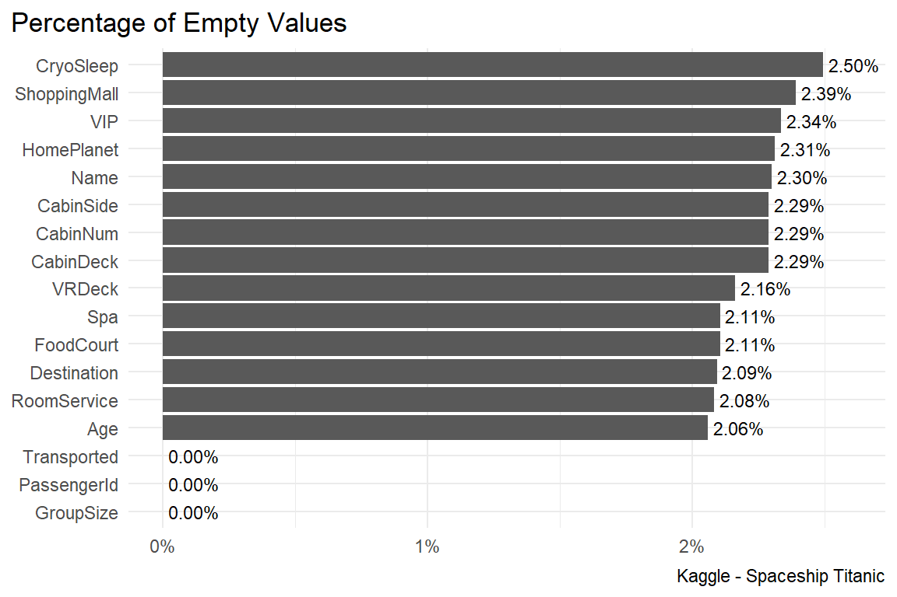
Numeric Variables
Let’s observe each of numerical columns.
Age
The first column is the age of passengers. The age distribution of the Spaceship Titanic’s passengers reveals that approximately half are between 20 to 40years old. When comparing those who were transported to an alternate dimension with those who weren’t, there is a tendency that the transported passengers are younger.
Full Code
p_age1 <-
train_data |>
ggplot(aes(x = Age, fill = Transported)) +
geom_histogram() +
facet_wrap(. ~ Transported, nrow = 1)
p_age2 <-
train_data |>
ggplot(aes(x = Age, y = Transported, fill = Transported)) +
geom_boxplot()
(p_age1 + p_age2) +
plot_annotation(title = "Passengers' Age",
caption = "Kaggle - Spaceship Titanic") &
scale_fill_brewer(type = "qual", palette = 6) &
labs(x = NULL, y = NULL) &
guides(fill = "none")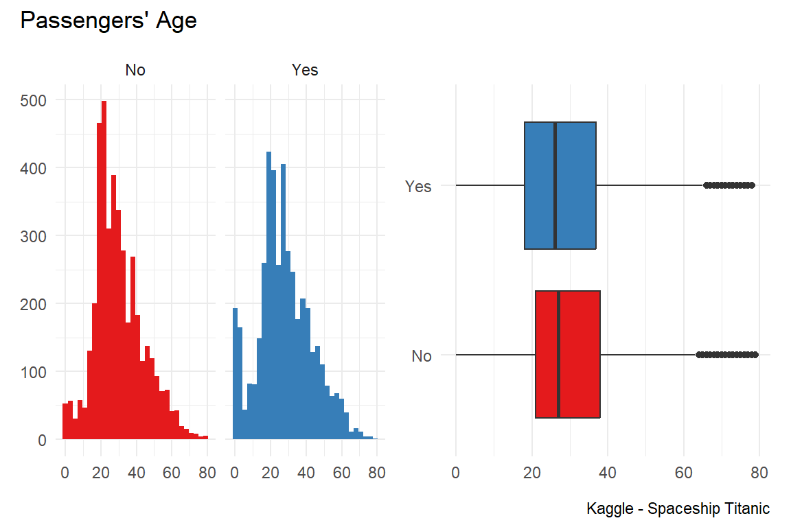
Room Service
Moving on to the room service, it can be seen that there is a skewness in the room service charges, with a few passengers incurring significantly higher expenses. To improve analytical processes, a logarithmic transformation for this data might be applied.
Full Code
p_room1 <-
train_data |>
ggplot(aes(x = RoomService, fill = Transported)) +
geom_histogram() +
scale_x_log10(labels = scales::scientific, breaks = c(1, 1e2, 1e4)) +
facet_wrap(. ~ Transported, scales = "free_y")
p_room2 <-
train_data |>
ggplot(aes(x = RoomService, y = Transported, fill = Transported)) +
scale_x_log10(labels = scales::scientific, breaks = c(1, 1e2, 1e4)) +
geom_boxplot()
(p_room1 + p_room2) +
plot_annotation(title = "Room Service Charges",
caption = "Kaggle - Spaceship Titanic") &
scale_fill_brewer(type = "qual", palette = 6) &
labs(x = NULL, y = NULL) &
guides(fill = "none")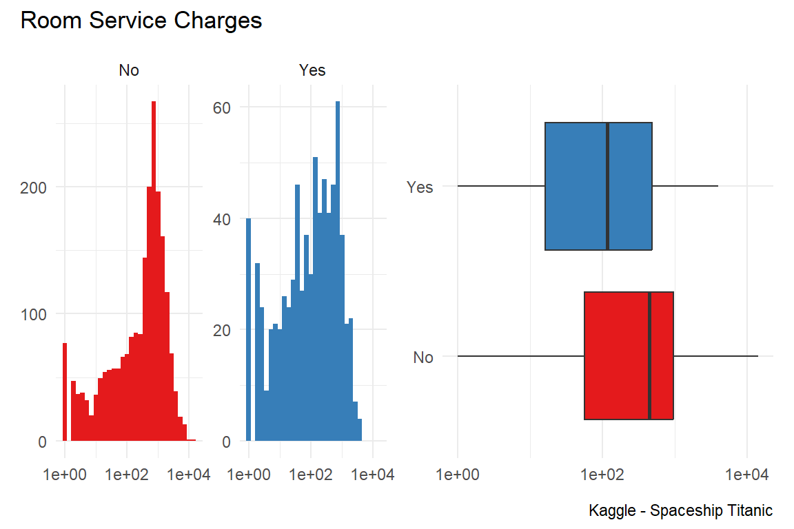
Food Court
This pattern of skewness extends to the amounts spent at the food court, where a small subset of passengers spent substantially more than their peers. Logarithmic transformation is again recommended here. Preliminary analysis of this transformed data suggests that transported passengers might have higher food court expenses, indicating a potential trend worth investigating further.
Full Code
p_food1 <-
train_data |>
ggplot(aes(x = FoodCourt, fill = Transported)) +
geom_histogram() +
scale_x_log10(labels = scales::scientific, breaks = c(1, 1e2, 1e4)) +
facet_wrap(. ~ Transported, scales = "free_y")
p_food2 <-
train_data |>
ggplot(aes(x = FoodCourt, y = Transported, fill = Transported)) +
scale_x_log10(labels = scales::scientific, breaks = c(1, 1e2, 1e4)) +
geom_boxplot()
(p_food1 + p_food2) +
plot_annotation(title = "Food Court Charges",
caption = "Kaggle - Spaceship Titanic") &
scale_fill_brewer(type = "qual", palette = 6) &
labs(x = NULL, y = NULL) &
guides(fill = "none")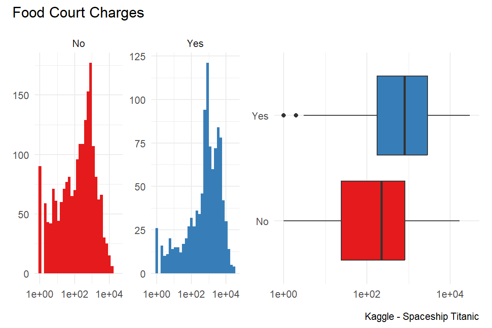
Shopping Mall
Analyzing the shopping expenses, we observe similar skewness, which we will address with data transformation. Post-transformation observations hint that passengers who were not transported may generally spend less on shopping.
Full Code
p_shopping1 <-
train_data |>
ggplot(aes(x = ShoppingMall, fill = Transported)) +
geom_histogram() +
scale_x_log10(labels = scales::scientific, breaks = c(1, 1e2, 1e4)) +
facet_wrap(. ~ Transported, scales = "free_y")
p_shopping2 <-
train_data |>
ggplot(aes(x = ShoppingMall, y = Transported, fill = Transported)) +
scale_x_log10(labels = scales::scientific, breaks = c(1, 1e2, 1e4)) +
geom_boxplot()
(p_shopping1 + p_shopping2) +
plot_annotation(title = "Room Service",
caption = "Kaggle - Spaceship Titanic") &
scale_fill_brewer(type = "qual", palette = 6) &
labs(x = NULL, y = NULL) &
guides(fill = "none")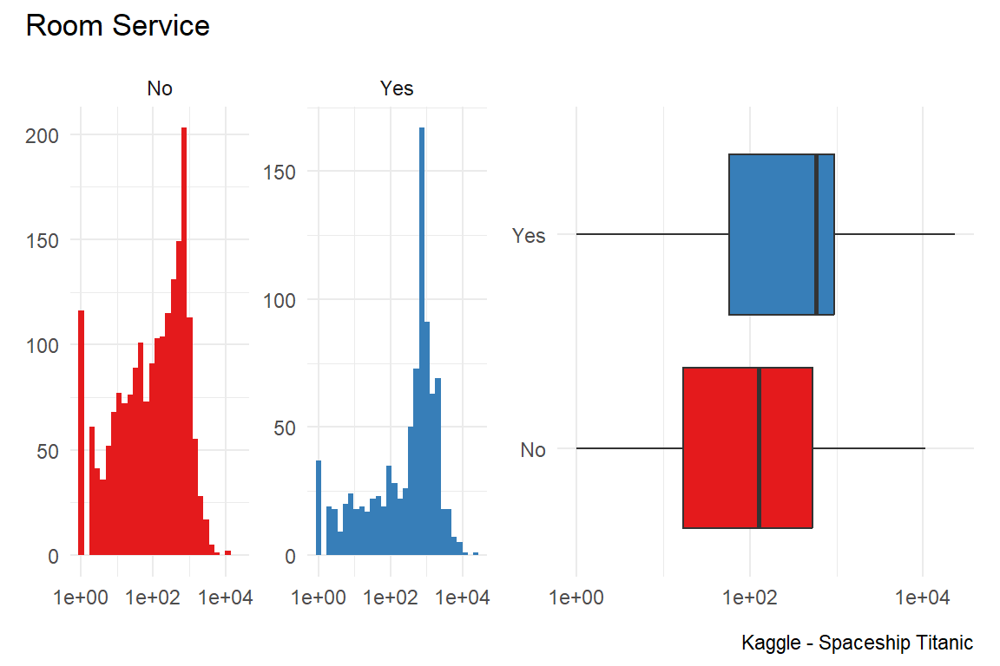
Spa
The expenditure data for the spa services also presents outliers, with certain individuals spending significantly more. After applying a log transformation to mitigate the effects of these outliers, we note that non-transported individuals appear to allocate more towards spa services.
Full Code
p_spa1 <-
train_data |>
ggplot(aes(x = Spa, fill = Transported)) +
geom_histogram() +
scale_x_log10(labels = scales::scientific, breaks = c(1, 1e2, 1e4)) +
facet_wrap(. ~ Transported, scales = "free_y")
p_spa2 <-
train_data |>
ggplot(aes(x = Spa, y = Transported, fill = Transported)) +
scale_x_log10(labels = scales::scientific, breaks = c(1, 1e2, 1e4)) +
geom_boxplot()
(p_spa1 + p_spa2) +
plot_annotation(title = "Spa",
caption = "Kaggle - Spaceship Titanic") &
scale_fill_brewer(type = "qual", palette = 6) &
labs(x = NULL, y = NULL) &
guides(fill = "none")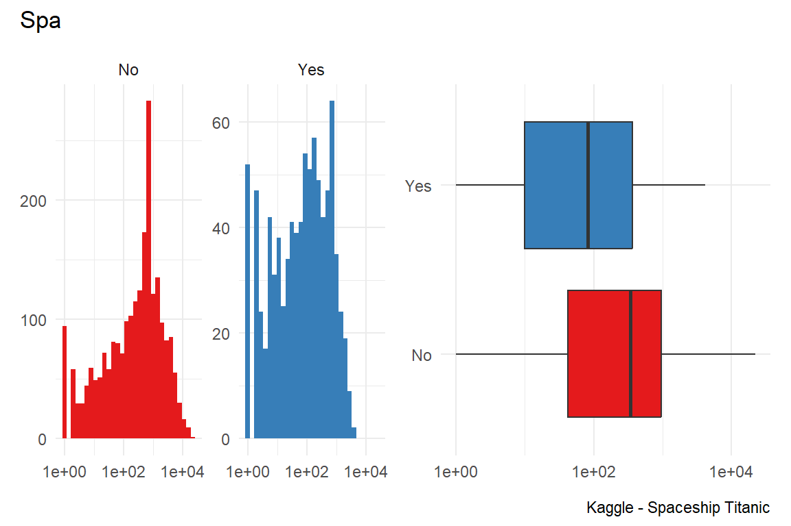
VR Deck
Lastly, the expenses on the VR deck also exhibit right skewness, with a few passengers spending substantially more. The transformed data indicates a correlation where passengers with higher VR deck expenses are less likely to be transported.
Full Code
p_vr1 <-
train_data |>
ggplot(aes(x = VRDeck, fill = Transported)) +
geom_histogram() +
scale_x_log10(labels = scales::scientific, breaks = c(1, 1e2, 1e4)) +
facet_wrap(. ~ Transported, scales = "free_y")
p_vr2 <-
train_data |>
ggplot(aes(x = VRDeck, y = Transported, fill = Transported)) +
scale_x_log10(labels = scales::scientific, breaks = c(1, 1e2, 1e4)) +
geom_boxplot()
(p_vr1 + p_vr2) +
plot_annotation(title = "VR Deck",
caption = "Kaggle - Spaceship Titanic") &
scale_fill_brewer(type = "qual", palette = 6) &
labs(x = NULL, y = NULL) &
guides(fill = "none")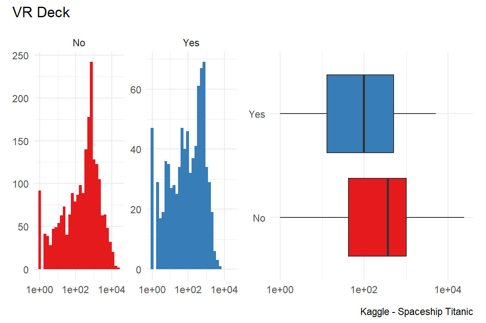
Categorical Variables
Moving on to examining categorical variables.
Cryo Sleep
Our exploration begins with passengers’ being put into cryo sleep during the travel. Slightly less than 35% was for suspended to be put into cryo sleep. Notably, over three-quarters of these passengers were transported, compared to a mere 30% transport rate among those who stayed awake.
Full Code
train_data |>
ggplot(aes(x = CryoSleep, fill = Transported)) +
geom_bar(position = "fill") +
scale_fill_brewer(type = "qual", palette = 6) +
scale_y_continuous(labels = percent) +
labs(title = "Cryo Sleep",
caption = "Kaggle - Spaceship Titanic",
x = NULL, y = NULL) +
theme(legend.position = "bottom")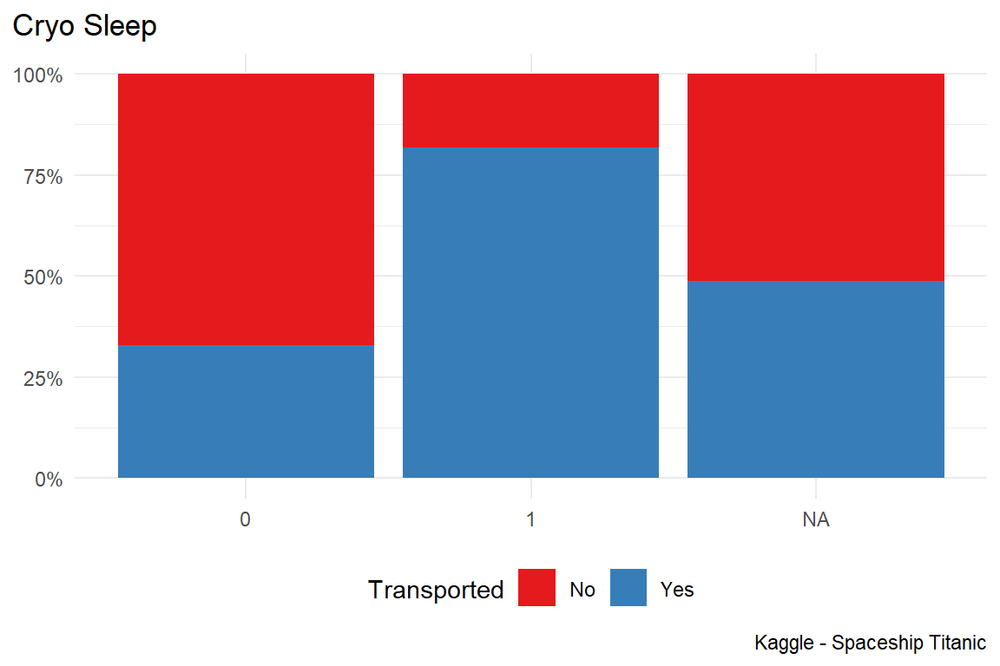
VIP
The ship’s records also show that VIP services as an option for passengers. These exclusive amenities were enjoyed by only about 2.2% of passengers. Interestingly, while non-VIPs had a roughly equal chance of transport, a larger proportion of VIP passengers ended up not being transported.
Full Code
train_data |>
ggplot(aes(x = VIP, fill = Transported)) +
geom_bar(position = "fill") +
scale_fill_brewer(type = "qual", palette = 6) +
scale_y_continuous(labels = percent) +
labs(title = "VIP",
caption = "Kaggle - Spaceship Titanic",
x = NULL, y = NULL) +
theme(legend.position = "bottom")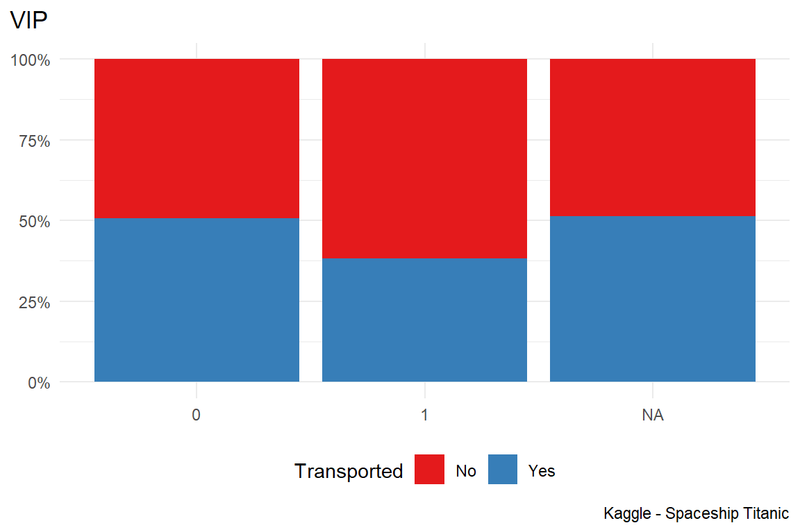
Group Size
Most passengers embarked on their space voyage alone, but there were also those who traveled in groups. These groups ranged in size, sometimes including as many as eight individuals. The data suggests that groups of three to six had higher transport rates.
Full Code
train_data |>
ggplot(aes(x = GroupSize, fill = Transported)) +
geom_bar(position = "fill") +
scale_fill_brewer(type = "qual", palette = 6) +
scale_y_continuous(labels = percent) +
labs(title = "Group Size",
caption = "Kaggle - Spaceship Titanic",
x = NULL, y = NULL) +
theme(legend.position = "bottom")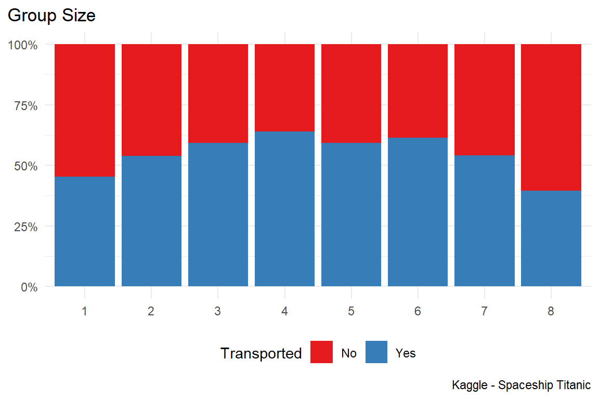
Home Planet
We can also observe the the planet from which passengers depart. More than half were from the earth, while others came from either Europa and Mars. There’s a notable trend in transport success rates among these groups: Earth’s travelers were less likely to be transported, but, for passengers from Europa, the situation flips as more than 60% of them were transported.
Full Code
train_data |>
ggplot(aes(x = HomePlanet, fill = Transported)) +
geom_bar(position = "fill") +
scale_fill_brewer(type = "qual", palette = 6) +
scale_y_continuous(labels = percent) +
labs(title = "Home Planet",
caption = "Kaggle - Spaceship Titanic",
x = NULL, y = NULL) +
theme(legend.position = "bottom")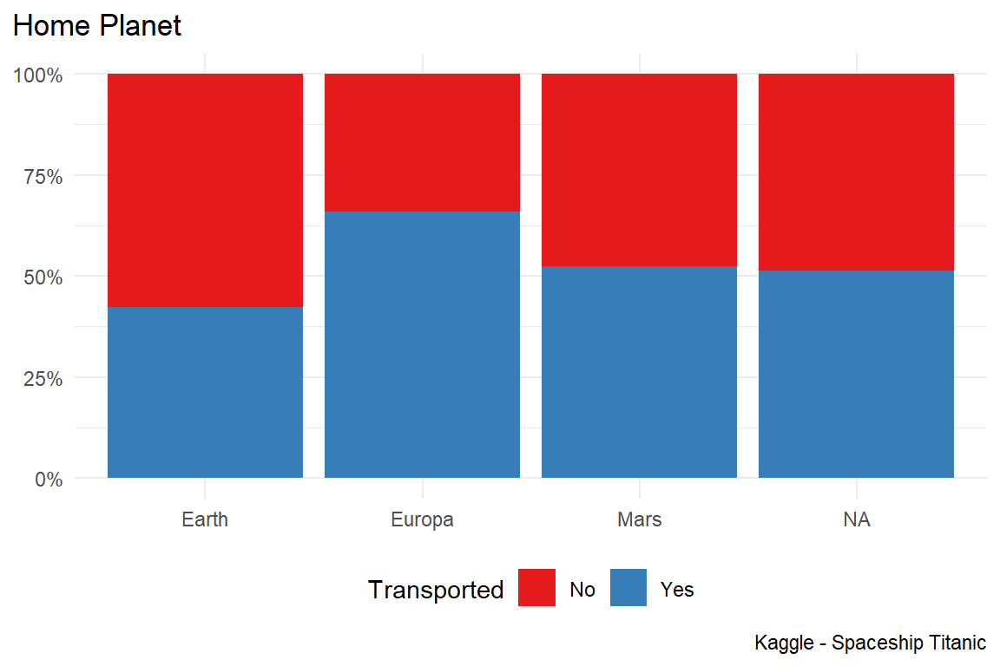
Destination
Most passengers headed to TRAPPIST-1e as their destination, and, from those, there were just below 50% of them being transported. About 20% of passengers intended to traveled to 55 Cancri e with more than 60% of them successfully transported into alternate dimension. The other 10% were intended to go to PSO J31 8.5-22. Within this group, the odds of being transported is approximately 50%.
Full Code
train_data |>
ggplot(aes(x = Destination, fill = Transported)) +
geom_bar(position = "fill") +
scale_fill_brewer(type = "qual", palette = 6) +
scale_y_continuous(labels = percent) +
labs(title = "Destination",
caption = "Kaggle - Spaceship Titanic",
x = NULL, y = NULL) +
theme(legend.position = "bottom")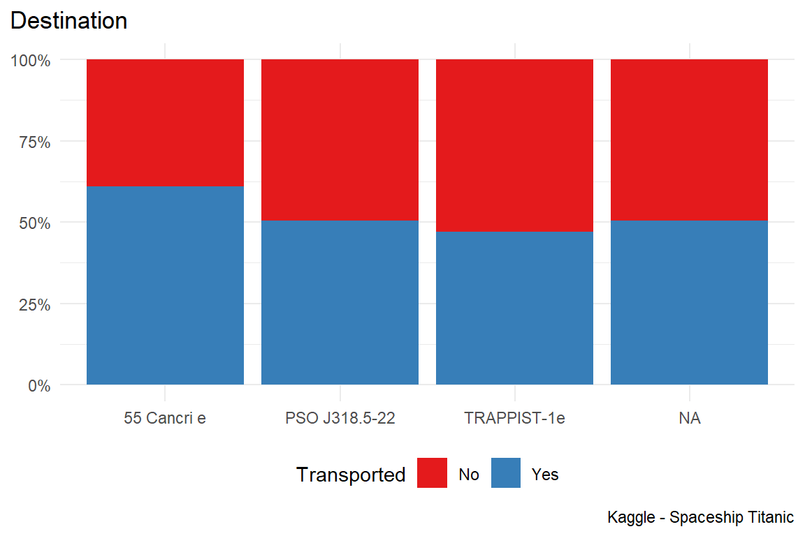
Cabin Deck
From their ticket, we can extract the cabin a passenger were on. About 60% were allocated on cabin F and G, about another 30% were on cabin B, C, and E, while the rest were on cabin A, D, and T. Cabin T was the cabin with the lowest percentage of people getting transported. On the contrary, cabin B and C were cabins with the highest proportion.
Full Code
train_data |>
ggplot(aes(x = CabinDeck, fill = Transported)) +
geom_bar(position = "fill") +
scale_fill_brewer(type = "qual", palette = 6) +
scale_y_continuous(labels = percent) +
labs(title = "Most Common Cabin Deck",
caption = "Kaggle - Spaceship Titanic",
x = NULL, y = NULL) +
theme(legend.position = "bottom")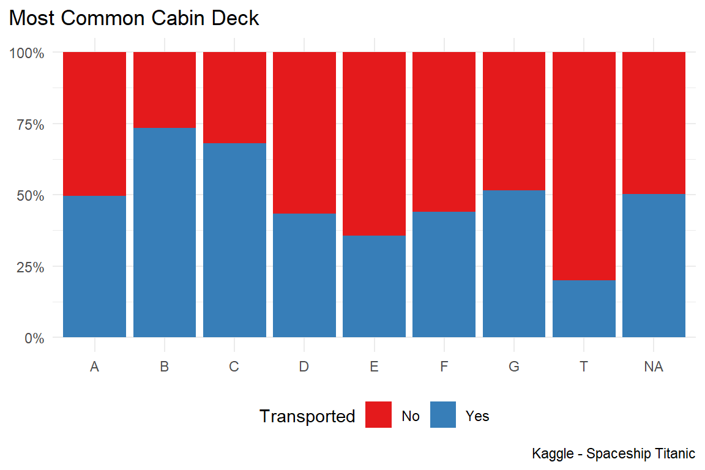
Cabin Number
Another inspection that we can made from passenger’s tickets is the cabin number. However, the graph below demonstrates that cabin number does not provide any useful information on whether passengers were transported. We can opt to omit this variable from the predictive model development.
Full Code
train_data |>
count(CabinNum, Transported) |>
mutate(TotalCabinNum = sum(n), .by = CabinNum) |>
mutate(CabinNum = if_else(TotalCabinNum / sum(n) >= 0.002, CabinNum, "Other")) |>
summarise(n = sum(n), .by = c(CabinNum, Transported)) |>
ggplot(aes(x = CabinNum, fill = Transported)) +
geom_bar(position = "fill") +
scale_fill_brewer(type = "qual", palette = 6) +
scale_y_continuous(labels = percent) +
labs(title = "Most Common Cabin Number",
caption = "Kaggle - Spaceship Titanic",
x = NULL, y = NULL) +
theme(legend.position = "bottom")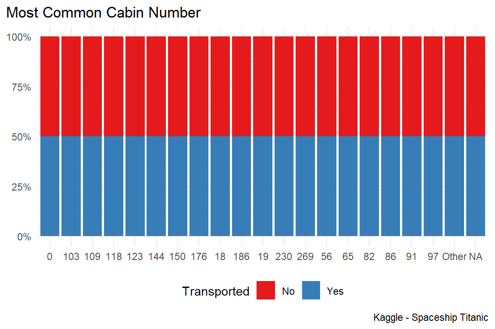
Cabin Side
Lastly, we can obtain information of the side a passenger were on during the travel. We can see from the table that passengers were proportionally distributed into both cabin side P and S. People on the cabin P seemed less likely to be transported while the opposite was true for the cabin S.
Full Code
train_data |>
ggplot(aes(x = CabinSide, fill = Transported)) +
geom_bar(position = "fill") +
scale_fill_brewer(type = "qual", palette = 6) +
scale_y_continuous(labels = percent) +
labs(title = "Cabin Side",
caption = "Kaggle - Spaceship Titanic",
x = NULL, y = NULL) +
theme(legend.position = "bottom")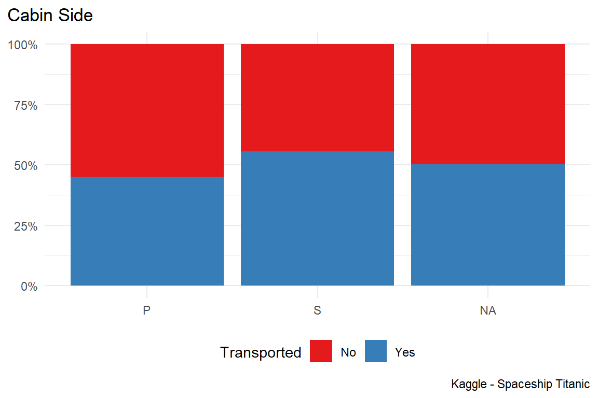
Model Development
For this section, we will delve into various pre-processing sets as well as machine learning models. The tidymodels packages present a compelling methodology to address these challenges using multiple workflows of pre-processing steps and a model. The recipe package provide predefined functions for pre-processing while the parsnip package allow users to specify mainstream machine learning models with a common interface. For our convenience, workflow_set was used to handle many workflows. The details of each package can be explored on the tidymodels webpage.
To evalute model performance, we will utilize the \(k\)-fold cross-validation function that is come from the rsample package. Specifically, we will implement \(k\) equal to 5. The method partitions the data into ten subsets, or ‘folds’, and using each fold as a validation set against models trained on the remaining nine folds. This iterative process not only helps in fine-tuning the model parameters for better generalization but also provides a robust measure of model performance, thereby preventing overfitting.
The development of the model comprises of five stages:
- Defining pre-processing steps
- Defining models specification
- Finding the best possible combination of model hyperparameters and pre-processor
- Finalizing the model using the best combination
- Generating predictions for submission
Define Pre-processing Steps
In tidymodels, you can generate multiple pre-processing steps for the data. The recipe package provide you with comprehensive steps such as for imputation of missing values, discretization of continuous data, and generating dummy data for categorical variables.
For this problem, we experiment two different approaches to pre-process data for model input:
- Basic Steps: This recipe leverages basic imputation technique, i.e., using mode for categorical data and median for numerical data (
step_impute_mode()andstep_impute_median()respectively). As some models cannot directly work with categorical data, we can convert all nominal variables into dummy variables withstep_dummy(). In the end, we applystep_zv()to remove variable with no variance (has only one unique value). - Steps with Transformation and Normalization: This recipe will first apply logarithmic transformation to several skewed variables using
step_log()and normalize all numeric columns (ensure variable has zero mean and one standard deviation) usingstep_normalize(). The imputation method for missing values is based on bagged trees (hence the namestep_impute_bag()). Here, we also implementstep_dummy()andstep_zv()as previously.
Both preprocessing steps are stored in a list to be combined with several model specifications later.
# basic preprocessing steps
basic_preproc <-
recipe(Transported ~ GroupSize + HomePlanet + CryoSleep + CabinDeck +
CabinSide + Destination + Age + VIP + RoomService +
FoodCourt + ShoppingMall + Spa + VRDeck,
data = train_data) |>
step_impute_mode(all_nominal_predictors()) |>
step_impute_median(all_numeric_predictors()) |>
step_dummy(all_nominal_predictors()) |>
step_zv(all_predictors())
# preprocessing steps with transformation and normalization
transform_preproc <-
recipe(Transported ~ GroupSize + HomePlanet + CryoSleep + CabinDeck +
CabinSide + Destination + Age + VIP + RoomService +
FoodCourt + ShoppingMall + Spa + VRDeck,
data = train_data) |>
step_log(RoomService, FoodCourt, ShoppingMall, Spa, VRDeck, offset = 1) |>
step_normalize(all_numeric_predictors()) |>
step_impute_bag(all_predictors()) |>
step_dummy(all_nominal_predictors()) |>
step_zv(all_predictors())
preproc <-
list("basic" = basic_preproc,
"trans" = transform_preproc)Define Model Specifications
Modelling using tidymodels can be somewhat different that directly using each original package. The framework include a systematic and unified approach to modelling with users defining the type of model then specify which engine to use, problem the model will face, and some hyperparameter values. More specifically, defining a parsnip model requires one to consider these four aspects:
- Model type such as linear regression, multilayer perceptron, random forest, etc.
- Computational engine that defines specific package or method in the back end
- Mode of problem, e.g., regression and classification
- Hyperparameters setting which can be specify for tuning with
tune()
Here, we define six different model types, instantiated using functions like logistic_reg() for logistic regression model, decision_tree() for decision tree model and rand_forest() for random forest. The ‘glmnet’ engine is specified for the multinomial regression and logistic regression model while others use the default engine. For each model, two to four hyperparameters are set for tuning. In the end, all models are set for classification mode.
# Define: Logistic Regression
logreg_spec <-
logistic_reg(engine = "glmnet",
penalty = tune(),
mixture = tune())
# Define: Multinomial Regression
multinom_spec <-
multinom_reg(engine = "glmnet",
penalty = tune(),
mixture = tune())
# Define: Decision Tree
dtree_spec <-
decision_tree(cost_complexity = tune(),
tree_depth = tune(),
min_n = tune())
# Define: XGBoost
btree_spec <-
boost_tree(trees = tune(),
mtry = tune(),
min_n = tune())
# Define: Random Forest
rf_spec <-
rand_forest(trees = tune(),
min_n = tune(),
mtry = tune())
# List all models and set all for classification
models <-
list("LogisticRegression" = logreg_spec,
"MultinomialRegression" = multinom_spec,
"DecisionTree" = dtree_spec,
"BoostedTree" = btree_spec,
"RandomForest" = rf_spec) |>
map(set_mode, "classification")Train Several Workflows
We are going to search for the optimal model for submission by comparing different combinations of pre-processing steps and models, including various hyperparameter sets. The evaluation will be performed using the ROC-AUC metric with \(k\)-fold cross-validation. In this process, we will define the resampling folds, multiple workflows, and the tuning search space. We will then apply a grid search to each workflow by training it on different folds. The results are compared at the end to find the optimal parameters.
k-fold Cross-validation
First, let’s setup training folds for subsequent hyperparameter tuning. We can use the vfold_cv for this. The number of fold is set to 5.
train_folds <- vfold_cv(train_data, v = 5)
train_folds# 5-fold cross-validation
# A tibble: 5 × 2
splits id
<list> <chr>
1 <split [6954/1739]> Fold1
2 <split [6954/1739]> Fold2
3 <split [6954/1739]> Fold3
4 <split [6955/1738]> Fold4
5 <split [6955/1738]> Fold5The ‘splits’ column contains each split set for each fold. The subset of data used for training the model is referred to as the analysis subset, while the assessment subset refers to the data used for evaluating performance. Both the analysis() and assessment() functions can be used to extract each split for all folds. Here, we can observe that fold 1 contains 6954 observations in the data for training the model, and 1739 observations for evaluating its performance.
print(dim(analysis(train_folds$splits[[1]])))[1] 6954 17print(dim(assessment(train_folds$splits[[1]])))[1] 1739 17Managing Workflows and Workflow Set
In the modeling process, a workflow allows you to manage one model and one pre-processing step, which can be either a simple R formula like y ~ x1 + x2 or a recipe of pre-processing steps. As we handel many workflows resulting from combining two pre-processing recipes and several model specifications, we need the workflow_set() function to work more effectively. The cross argument tells the function to combine every recipe with each model.
all_workflows <- workflow_set(preproc = preproc, models = models, cross = TRUE)
all_workflows# A workflow set/tibble: 10 × 4
wflow_id info option result
<chr> <list> <list> <list>
1 basic_LogisticRegression <tibble [1 × 4]> <opts[0]> <list [0]>
2 basic_MultinomialRegression <tibble [1 × 4]> <opts[0]> <list [0]>
3 basic_DecisionTree <tibble [1 × 4]> <opts[0]> <list [0]>
4 basic_BoostedTree <tibble [1 × 4]> <opts[0]> <list [0]>
5 basic_RandomForest <tibble [1 × 4]> <opts[0]> <list [0]>
6 trans_LogisticRegression <tibble [1 × 4]> <opts[0]> <list [0]>
7 trans_MultinomialRegression <tibble [1 × 4]> <opts[0]> <list [0]>
8 trans_DecisionTree <tibble [1 × 4]> <opts[0]> <list [0]>
9 trans_BoostedTree <tibble [1 × 4]> <opts[0]> <list [0]>
10 trans_RandomForest <tibble [1 × 4]> <opts[0]> <list [0]>We can get each workflow using its ID as an argument to the extract_workflow() function.
all_workflows |>
extract_workflow("basic_LogisticRegression") ══ Workflow ════════════════════════════════════════════════════════════════════
Preprocessor: Recipe
Model: logistic_reg()
── Preprocessor ────────────────────────────────────────────────────────────────
4 Recipe Steps
• step_impute_mode()
• step_impute_median()
• step_dummy()
• step_zv()
── Model ───────────────────────────────────────────────────────────────────────
Logistic Regression Model Specification (classification)
Main Arguments:
penalty = tune()
mixture = tune()
Computational engine: glmnet Parameter Set Dials
The tune package is used for finding the best set of hyperparameters. Typically, you will find functions named after hyperparameters such as mtry(), penalty(), and cost_complexity(). These functions are useful for customizing the search space of the search algorithm used for tuning, as presented in this subsection. We can extract all parameter sets for each workflow with the extract_parameter_set_dials() function.
all_workflows |>
extract_workflow("trans_RandomForest") |>
extract_parameter_set_dials()Collection of 3 parameters for tuning
identifier type object
mtry mtry nparam[?]
trees trees nparam[+]
min_n min_n nparam[+]
Model parameters needing finalization:
# Randomly Selected Predictors ('mtry')
See `?dials::finalize` or `?dials::update.parameters` for more information.As an example, we will customize the tune parameter search for boosted tree and random forest models.
filtered_wflow_ids <-
all_workflows$wflow_id |>
str_subset("BoostedTree$|RandomForest$")
for (wflow_id in filtered_wflow_ids) {
new_param_info <-
all_workflows |>
extract_workflow(wflow_id) |>
extract_parameter_set_dials() |>
update(mtry = mtry(c(2, 20)),
min_n = min_n(c(2, 50)),
trees = trees(c(250, 5000)))
all_workflows <-
all_workflows |>
option_add(param_info = new_param_info, id = wflow_id)
}
all_workflows# A workflow set/tibble: 10 × 4
wflow_id info option result
<chr> <list> <list> <list>
1 basic_LogisticRegression <tibble [1 × 4]> <opts[0]> <list [0]>
2 basic_MultinomialRegression <tibble [1 × 4]> <opts[0]> <list [0]>
3 basic_DecisionTree <tibble [1 × 4]> <opts[0]> <list [0]>
4 basic_BoostedTree <tibble [1 × 4]> <opts[1]> <list [0]>
5 basic_RandomForest <tibble [1 × 4]> <opts[1]> <list [0]>
6 trans_LogisticRegression <tibble [1 × 4]> <opts[0]> <list [0]>
7 trans_MultinomialRegression <tibble [1 × 4]> <opts[0]> <list [0]>
8 trans_DecisionTree <tibble [1 × 4]> <opts[0]> <list [0]>
9 trans_BoostedTree <tibble [1 × 4]> <opts[1]> <list [0]>
10 trans_RandomForest <tibble [1 × 4]> <opts[1]> <list [0]>Perform Hyperparameters Tuning with Many Models
All the requirements for searching the optimal model, along with the best hyperparameter set, are complete at this stage. We can use the workflow_map function to work with workflow_set and the resample object (train_folds). This function can be considered a specialized purrr::map function to fit many workflows within a workflow_set. By default, hyperparameter tuning is performed using the grid search method. Additionally, you can explore different search methods provided by tidymodels.
# Tue hyperparameters
all_workflows <-
all_workflows |>
workflow_map(resamples = train_folds, verbose = TRUE, grid = 1, seed = 123)
all_workflows# A workflow set/tibble: 10 × 4
wflow_id info option result
<chr> <list> <list> <list>
1 basic_LogisticRegression <tibble [1 × 4]> <opts[2]> <tune[+]>
2 basic_MultinomialRegression <tibble [1 × 4]> <opts[2]> <tune[+]>
3 basic_DecisionTree <tibble [1 × 4]> <opts[2]> <tune[+]>
4 basic_BoostedTree <tibble [1 × 4]> <opts[3]> <tune[+]>
5 basic_RandomForest <tibble [1 × 4]> <opts[3]> <tune[+]>
6 trans_LogisticRegression <tibble [1 × 4]> <opts[2]> <tune[+]>
7 trans_MultinomialRegression <tibble [1 × 4]> <opts[2]> <tune[+]>
8 trans_DecisionTree <tibble [1 × 4]> <opts[2]> <tune[+]>
9 trans_BoostedTree <tibble [1 × 4]> <opts[3]> <tune[+]>
10 trans_RandomForest <tibble [1 × 4]> <opts[3]> <tune[+]>Evaluate the Results
Now, let’s evaluate the results of the previous step. The autoplot() function is a convenient tool that allows you to automatically generate a visualization of a particular type of object. This is a ggplot2 graph, meaning we can extend it with many other libraries, such as ggrepel::geom_text_repel(). Based on this graph, we can infer that the boosted tree and random forest algorithms generally perform better than the rest.
all_workflows |>
autoplot(rank_metric = "roc_auc", metric = "roc_auc", select_best = TRUE) +
geom_text_repel(aes(label = wflow_id)) +
scale_color_discrete(guide = "none") +
scale_shape_discrete(guide = "none") +
labs(title = "Workflow Performance",
caption = "Kaggle - Spaceship Titanic",
x = NULL, y = NULL)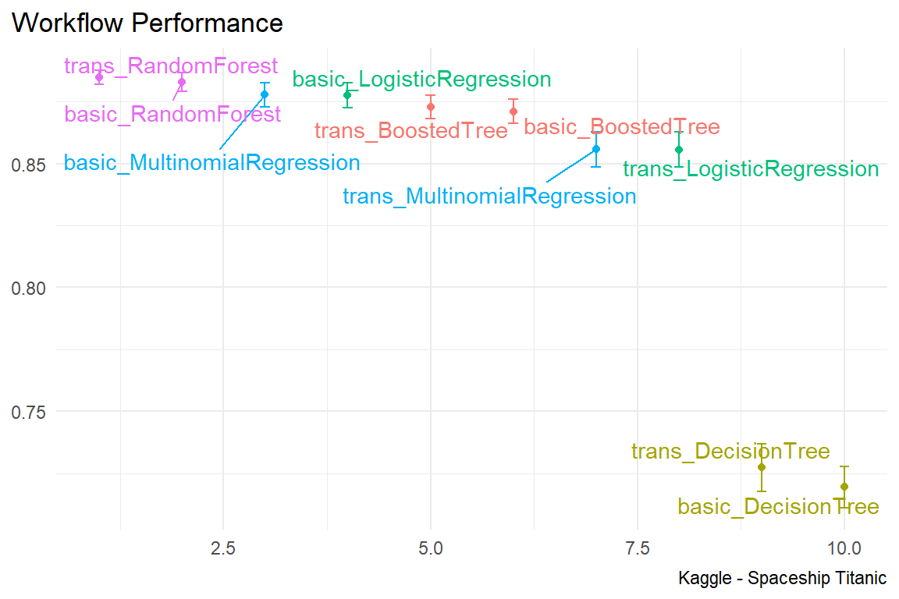
The rank_results function allows you to order the performance for all combinations of workflow and hyperparameter set. The final model, along with its pre-processing steps and hyperparameter set, is selected based on the ROC-AUC metric.
all_workflows |>
rank_results(rank_metric = "accuracy") |>
filter(.metric == "roc_auc") |>
arrange(desc(mean))# A tibble: 10 × 9
wflow_id .config .metric mean std_err n preprocessor model rank
<chr> <chr> <chr> <dbl> <dbl> <int> <chr> <chr> <int>
1 trans_RandomFor… Prepro… roc_auc 0.885 0.00173 5 recipe rand… 1
2 basic_RandomFor… Prepro… roc_auc 0.883 0.00227 5 recipe rand… 2
3 basic_Multinomi… Prepro… roc_auc 0.878 0.00305 5 recipe mult… 4
4 basic_LogisticR… Prepro… roc_auc 0.878 0.00306 5 recipe logi… 3
5 trans_BoostedTr… Prepro… roc_auc 0.873 0.00287 5 recipe boos… 5
6 basic_BoostedTr… Prepro… roc_auc 0.871 0.00301 5 recipe boos… 6
7 trans_Multinomi… Prepro… roc_auc 0.856 0.00426 5 recipe mult… 8
8 trans_LogisticR… Prepro… roc_auc 0.856 0.00427 5 recipe logi… 7
9 trans_DecisionT… Prepro… roc_auc 0.727 0.00581 5 recipe deci… 9
10 basic_DecisionT… Prepro… roc_auc 0.719 0.00510 5 recipe deci… 10Finalize Model
To finalize the model, we first select the best combination of model and pre-processing steps. This can be done simply by ranking the results based on the ROC-AUC metric and taking the top workflow ID.
# find the model with the best hyperparameter
best_wflow_id <-
all_workflows |>
rank_results(rank_metric = "roc_auc") |>
_[["wflow_id"]][[1]]
best_wflow_id[1] "trans_RandomForest"Afterwards, we can extract the hyperparameter setting for the best performance with the select_best() function.
best_params <-
all_workflows |>
extract_workflow_set_result(best_wflow_id) |>
select_best(metric = "accuracy")
best_params# A tibble: 1 × 4
mtry trees min_n .config
<int> <int> <int> <chr>
1 10 751 10 Preprocessor1_Model1Finally, the finalize_workflow() function will take the values from best_params and update the workflow. We can retrain the final model with all available data to ensure better performance on unseen data (i.e., test_data).
# train with full data
final_model <-
all_workflows |>
extract_workflow(best_wflow_id) |>
finalize_workflow(best_params) |>
fit(train_data)Generate Predictions and Make Submission
The predict() function here takes a workflow or model object and outputs a dataframe to make predictions based on test_data.
predictions <- predict(final_model, test_data)
predictions# A tibble: 4,277 × 1
.pred_class
<fct>
1 Yes
2 No
3 Yes
4 Yes
5 Yes
6 Yes
7 Yes
8 Yes
9 Yes
10 Yes
# ℹ 4,267 more rowsAs there is a certain way on how the submission should be uploaded, we need to manipulate the predictions data. Then, we can export this as a CSV file for submission.
# make predictions
submission <-
predictions |>
bind_cols(select(test_data, PassengerId)) |>
mutate(Transported = if_else(.pred_class == 1, "True", "False")) |>
select(PassengerId, Transported)
write_csv(submission, "./data/submission1.csv")
submissionConclusion
In summary, this project was a great opportunity to learn more about R’s tidymodels framework, adding a new skill to my data science toolbox. Working on the Spaceship Titanic Kaggle competition has shown me how powerful and user-friendly tidymodels can be, especially for working with many pre-processing and model workflows. This experience has not only broadened my understanding but also opened up new possibilities for future projects.